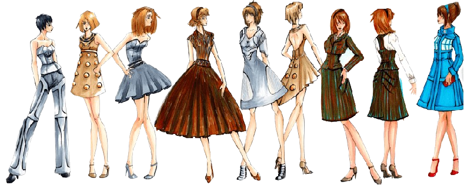

Trabajos relacionados con la moda
La moda es un campo diverso que abarca diseño, producción, marketing, venta al por menor, estilismo, periodismo, consultoría y mucho más.La industria de la moda es compleja y está sujeta a rápidos cambios. Por lo tanto, incluye una comprensión de las tendencias, las demandas del mercado, las cuestiones sostenibles y éticas, así como la dinámica entre los diferentes sectores de la moda.
Algunos trabajos con relacion son:
- Diseñador de Moda
- Crea colecciones, desde la investigación de tendencias hasta la selección de tejidos y supervisión de detalles.
- Relaciones Públicas
- Gestiona la relación con medios de comunicación, prensa y el público en general.
- Organizador de Eventos de Moda
- Se encarga de la organización de desfiles, ferias de moda, y otros eventos relacionados.
- Editor de Moda
- Trabaja en revistas de moda, seleccionando contenido y creando contenido original.
- Patronista
- Crea patrones para confeccionar.
- Coordinador de Producción
- Coordina la producción de una colección de moda.
- Fotógrafo de Moda
- Realiza fotografías para campañas publicitarias, editoriales, etc.
